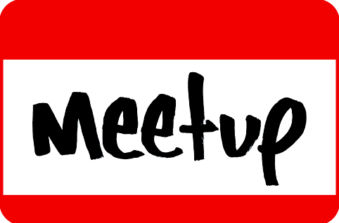

Geschrieben von {% if post.author %}{{ post.author }}{% else %}{{ site.title }}{% endif %} am {{ post.date | date: "%d.%m.%Y" }}
Melde dich bei unserer meetup-Gruppe an, um immer auf dem Laufenden zu bleiben: 